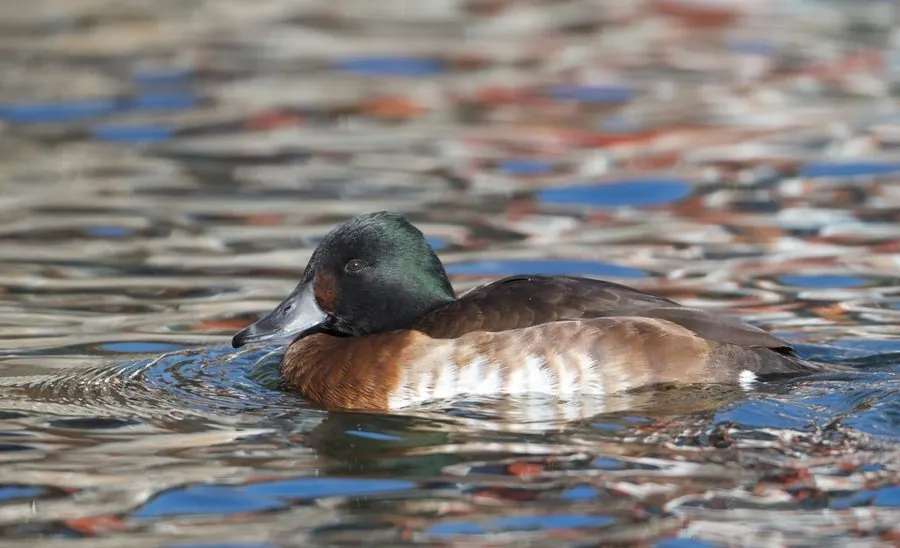

鸟类 · 动物界
青头潜鸭 Aythya baeri

东亚极危潜水鸭，雄鸟头部墨绿近黑、眼白如珠、胸部栗红，全球成熟个体不足千只，是湿地保护中的旗舰物种。
- 分类
- 门脊索动物门纲鸟纲目雁形目科鸭科属潜鸭属
- 栖息环境
- 东亚的淡水湖泊、芦苇沼泽、池塘与水库，繁殖期偏好水草茂密的浅水湿地
- 地理分布
- 繁殖于中国东北、俄罗斯远东和蒙古东部，越冬于中国长江流域、日本及东南亚
- 保护级别
- IUCN 极危（CR）；中国国家一级保护动物
物种志
青头潜鸭体长 41–46 cm，体重 500–700 g。雄鸟头部和颈部墨绿色并带光泽，眼睛白色，胸部栗红，背部暗褐，体侧褐色，尾下覆羽白色，喙灰黑色。雌鸟通体暗褐色，眼周浅色，羽色与白眼潜鸭相近但更暗，翼镜白色。
它们繁殖于中国东北、俄罗斯远东及蒙古东部的沼泽与湖泊，越冬于中国长江流域、日本、朝鲜半岛和东南亚。青头潜鸭生性隐秘，喜在芦苇和水草茂密的浅水沼泽中活动，以水生植物、螺类、昆虫和小鱼为食，常潜水取食。繁殖期在 5–6 月，巢筑于芦苇丛中，每窝产卵 6–10 枚。由于湿地围垦、水位变化和狩猎，其种群急剧萎缩，全球成熟个体估计不足 1000 只，被列为极危物种，中国已将其列为国家一级保护动物。
形态与习性
- 食性水生植物、螺类、昆虫和小鱼
- 体长41–46 cm
- 体重500–700 g
- 繁殖5–6 月，每窝 6–10 枚
- 种群全球成熟个体估计不足 1000 只
- 保护中国国家一级保护动物
趣味知识
- 青头潜鸭的白色眼睛在深色头部上格外醒目，是识别雄鸟的关键。
- 2012 年前后它被提升为极危物种，全球种群估计仅数百只。
- 它们冬天会混在红头潜鸭群中，观察时需要仔细分辨头色与眼色。